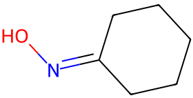

平成25年度 問4 有機化学及び燃料
次の記述の、【 】に入る語句の組合せとして最も適切なものはどれか。
有用なケトンであるシクロヘキサノンは、水素化ホウ素ナトリウムと反応して【 A 】に、また、【 B 】で処理してアジピン酸（ヘキサン二酸）へと容易に変換できる。また、ヒドロキシルアミンとシクロヘキサノンの脱水縮合で得られる【 C 】化合物は、【 D 】転位反応を経由して、ポリアミド6（ナイロン6）の原料である【 E 】を与えることが知られている。
| 選択肢 | A | B | C | D | E | |
|---|---|---|---|---|---|---|
|
①
|
シクロヘキサノール | 二酸化マンガン | オキシム | Beckmann （ベックマン） | ε-カプロラクタム | |
|
②
|
シクロヘキセノール | 過マンガン酸カリウム | ヒドラゾン | Beckmann （ベックマン） | ε-カプロラクトン | |
|
③
|
シクロヘキサノール | 過マンガン酸カリウム | オキシム | Beckmann （ベックマン） | ε-カプロラクタム | |
|
④
|
シクロヘキセノール | 過マンガン酸カリウム | ヒドラゾン | Claisen （クライゼン） | ε-カプロラクトン | |
|
⑤
|
シクロヘキセノール | 二酸化マンガン | ヒドラゾン | Claisen （クライゼン） | ε-カプロラクタム | |
正答
③ A：シクロヘキサノール、B：過マンガン酸カリウム、C：オキシム、D：Beckmann （ベックマン）、E：ε-カプロラクタム
1番の水素化ホウ素ナトリウムは強力な還元剤です。シクロヘキサノンは還元され、シクロヘキサノールになります。
2番の選択肢にある過マンガン酸カリウムは強力な酸化剤として知られています。二酸化マンガンは穏やかな酸化剤として使われます。シクロヘキサノンは過マンガン酸カリウムなどの強力な酸化剤によってアジピン酸に酸化されます。
3番のヒロドロキシルアミン（NH2OH）とシクロヘキサノンの脱水縮合は、まずヒドロキシルアミンの窒素原子がシクロヘキサノンのカルボニル炭素を求核攻撃します。次に、中間体から水分子が脱離し、C=N二重結合が形成されシクロヘキサノンオキシムが生成します。

4番のシクロヘキサノンオキシムのベックマン転位反応は、ε-カプロラクタムという重要な環状アミドの合成に用いられる重要な工業的プロセスです。シクロヘキサノンオキシムは酸触媒によるベックマン転位反応を経てオキシム基（C=N-OH）が環状アミドに変換されます。
生成物であるε-カプロラクタムは、ナイロン6の原料として知られています（5番）。